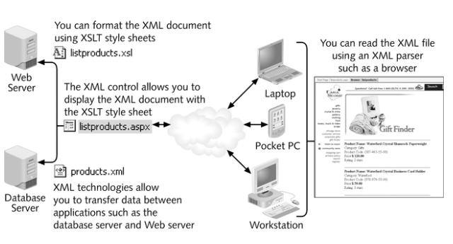
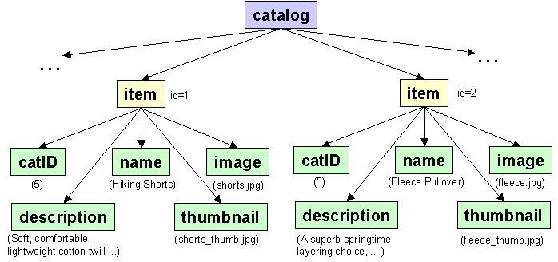
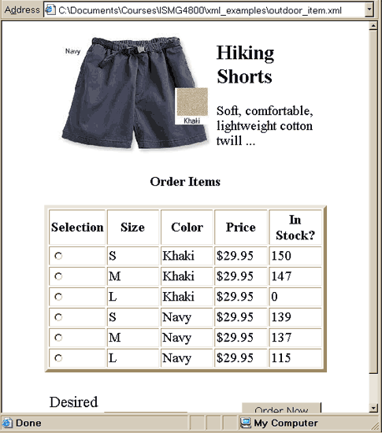
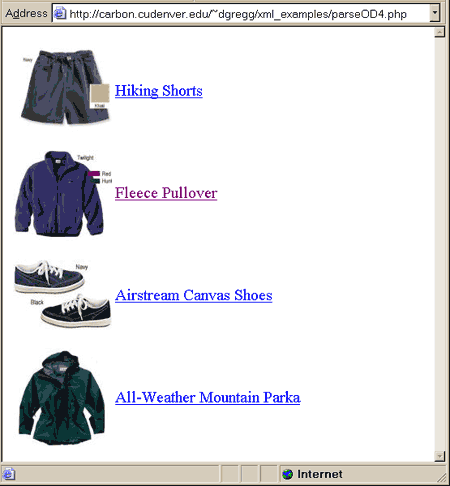

eXtensible Markup Language (XML)
- XML is becoming the language for business-to-business data
communication.
- XML is an extremely portable data format, able to leap across both multiple
platforms and applications.
- XML also provides technologies for the web, becoming the de facto format for web applications.
- XML is not a replacement for HTML.
- XML and HTML were designed with different goals:
- XML was designed to describe data and to focus on what data is.
- HTML was designed to display data and to focus on how data looks.
The main difference between XML and HTML
XML does not DO anything
- XML was not designed to DO anything. XML
was created to structure, store and to send information.
- The following example is a note stored as XML:
<note>
<to>Dawn</to>
<from>Jahan</from>
<heading>Reminder</heading>
<body>Don't forget the meeting Friday!</body>
</note>
- The note has a header and a message body. It also has sender and receiver
information. But still, this XML document does not DO anything. It is just pure
information wrapped in XML tags. Someone must write a piece of software to send,
receive or display it.
How can XML be used?
- XML can keep data separated from your HTML
- HTML pages are used to display data. Data is often stored inside HTML pages.
With XML this data can now be stored in a separate XML file. This way you can
concentrate on using HTML for formatting and display, and be sure that changes
in the underlying data will not force changes to any of your HTML code.
- XML can also store data inside HTML documents
- XML data can also be stored inside HTML pages as "Data Islands". You can
still concentrate on using HTML for formatting and displaying the data.
- XML can be used to exchange data
- In the real world, computer systems and databases contain data in
incompatible formats. One of the most time consuming challenges for developers
has been to exchange data between such systems over the Internet. Converting the
data to XML can greatly reduce this complexity and create data that can be read
by different types of applications.
- XML and B2B
- Expect to see a lot about XML and B2B (Business To Business) in the near
future.
- XML is going to be the main language for exchanging financial information
between businesses over the Internet. A lot of interesting B2B applications
are under development.
- XML can be used to store data
- XML can also be used to store data in files or in databases. Applications can
be written to store and retrieve information from the store, and generic
applications can be used to display the data.
- XML can make your Data more Useful
- Since XML is independent of hardware, software and application, you can
make your data available to other than only standard HTML browsers.
- Other clients and applications can access your XML files as data sources,
like they are accessing databases. Your data can be made available to all
kinds of "reading machines" (agents), and it is easier to make your data
available for blind people, or people with other disabilities.
- XML can be used to Create new Languages
- The Wireless Markup Language (WML), used to markup Internet applications
for handheld devices like mobile phones, is written in XML.

The XML System
- XML provides the rules that allow you to define
your own tag set rather than abiding by the rules enforced by HTML. The
syntax for defining XML is very similar to HTML.
- A Document Type Definition (DTD) or XML Schema the formal way to describe a
valid XML document.
- The eXtensible Style Language (XSL) is the means for displaying an XML
document. XSL has a similar effect as Cascading
Style Sheets (CSS) without negative effects of a proprietary style language.
XSL separates the formatting from the content of XML.
- The final part is the eXtensible Linking Language (XLL). The
proposed linking language is designed to link by
reference rather than by exact location or page name.
XLL allows references to point to a node or locations within the node by establishing
a series of relationships among information. XLL allows much more complex types
of links than HTML.
A Simple Example
- Here's an XML example document, a catalog for an outdoor equipment store (od.xml):
<?xml version="1.0"?>
<catalog>
<item id="1">
<catID>5</catID>
<name>Hiking Shorts</name>
<description>Soft, comfortable, lightweight
cotton twill ...</description>
<image>shorts.jpg</image>
<thumbnail>shorts_thumb.jpg</thumbnail>
</item>
<item id="2">
<catID>5</catID>
<name>Fleece Pullover</name>
<description>A superb springtime layering
choice, ...</description>
<image>fleece.jpg</image>
<thumbnail>fleece_thumb.jpg</thumbnail>
</item>
<item id="3">
<catID>5</catID>
<name>Airstream Canvas Shoes</name>
<description>These comfortable shoes tackle ...</description>
<image>shoes.jpg</image>
<thumbnail>shoes_thumb.jpg</thumbnail>
</item>
<item id="4">
<catID>5</catID>
<name>All-Weather Mountain Parka</name>
<description>This two-layer parka offers ...</description>
<image>parka.jpg</image>
<thumbnail>parka_thumb.jpg</thumbnail>
</item>
</catalog>
- Every XML document must include the standard XML declaration which looks
like this:
<?XML version="1.0"?>
This tells the reader of the XML document which version of the XML
specification the document complies with, ensuring compatibility now and in the
future.
- In this example the root element of the XML document is the
catalog
element.
- The catalog element contains one or more allowed instances of
the nested element item. The
nested elements describe a single item in the outdoor depot catalog.
- The item has an attribute id. The id is a special
attribute which must uniquely identify the elements which bear them (e.g. like a
primary key). No element type may have more than one ID attribute
specified. The id attribute can be used to locate an XML element within the XML
document.
- Each nested element (item) contains one (and only one) allowed instance of
four nested elements (fields):
- The category element specifies the category number for the
product.
-
The name element contains the product name.
- The description element contains the description of the product.
- The image element contains the image name for the product.
- The thumbnail element specifies the name for the small image.
XML Rules
- All XML documents must have a root tag
- All XML documents must contain a single tag pair to define the root element.
All other elements must be nested within the root element. All elements can have
sub (children) elements. Sub elements must be in pairs and correctly nested
within their parent element:
<root>
<child>
<subchild>xyz</subchild>
</child>
</root>
XML allows you to nest as many elements
as you'd like within the single root tag.
All XML tags are case-sensitive - so <Name> and
<name> are not the same tags.
Thus, the closing tags must match the opening tags exactly to be valid.
-
<name> and </Name> are not
the same, and thus
would not create an XML element.
- If you are using a single tag (e.g.
<br>) it must
end with a /> to indicate it is both an opening and closing tag: <br/>.
All XML elements must be properly nested
- In HTML some elements can be improperly nested within each other like this:
<b><i>This text is bold and italic</b></i>
- In XML all elements must be properly nested within each other like this (or
the page will not display)
<b><i>This text is bold and italic</i></b>
Empty tags (such as those used for image in HTML)
must not have a close tag. The start tag has
a back slash in the close angle bracket -
<image src="image.gif"/>.
Attribute values must always be quoted
Either single or double quotes can be used.
XML comments use the same style as HTML comments, which look like this:
<!-- This is an XML Comment! -->
XML Elements have Relationships
- Elements are related as parents and children.
- To understand XML terminology, you have to know how relationships between XML
elements are named, and how element content is described.
- Given the outdoor catalog XML file shown above - it has the following TREE
structure:

catalog is the root element. item is a child element of catalog. catalog is the parent element of item. catID, name, description, image, & thumbnail are
child elements of item. item is the parent element of catID, name,
description, image, & thumbnail.catID, name, description, image, & thumbnail are siblings (or sister elements)
because they have the same parent.
Elements have Content
- Elements can have different content types.
- An XML element is everything from (including) the element's start tag
to (including) the element's end tag.
- An element can have element content, mixed content, simple
content, or empty content. An element can also have attributes.
- In the example above, book has element content, because it contains
other elements. Chapter has mixed content because it contains both text
and other elements. Para has simple content (or text content)
because it contains only text. Prod has empty content, because it carries
no information.
- In the example above only the prod element has attributes. The
attribute named id has the value "33-657". The attribute named
media has the value "paper".
XML Attributes
- In HTML (and in XML) attributes provide additional information about
elements:
<img src="computer.gif">
<a href="demo.asp">
- Attributes often provide information that is not a part of the data. In the
example below, the file type is irrelevant to the data, but important to the
software that wants to manipulate the element:
<file type="gif">computer.gif</file>
- Data can be stored in child elements or in attributes.
There are no rules about when to use attributes, and when to use child
elements. However ist is generally better practice to use child elements if the information feels like data.
- Some of the problems with using attributes are:
- attributes cannot contain multiple values (child elements can)
- attributes are not easily expandable (for future changes)
- attributes cannot describe structures (child elements can)
- attributes are more difficult to manipulate by program code
- attribute values are not easy to test against a Document Type Definition (DTD)
- which is used to define the legal elements of an XML document
- If you use attributes as containers for data, you end up with documents
that are difficult to read and maintain. Try to use elements to
describe data.
- Use attributes only to provide information that is not relevant to the
data. EXCEPT for ID references to elements.
- Metadata (data about data) should be
stored as attributes, and that data itself should be stored as elements.
BAD:
<note ID="361A"
day="12" month="11"
year="2005" to="Dawn"
from="Jahan" heading="Reminder"
body="Don't forget the meeting Friday!">
</note>
GOOD:
<note ID="361A">
<date>
<day>12</day>
<month>11</month>
<year>2005</year>
</date>
<to>Dawn</to>
<from>Jahan</from>
<heading>Reminder</heading>
<body>Don't forget the meeting Friday!</body>
</note>
XML Advantages
- XML enables a longer lifespan for information. XML is simply a markup
language. This allows documents to be human-readable and extremely portable.
- The availability of XML
standards and applications has allowed XML to become the principle enabling
technology for transferring structured data between applications (and
companies).
- XML can be used to place
data on the Web such that automated data classification tools can understand
the data.
XML Disadvantages
- XML is text based. This
is convenient when it is necessary to share data between applications and
machines. However, it is inefficient. (larger data format, slower to read).
- XML does not solve the problem of incompatible data formats.
- Older applications do not support XML and converting existing data to XML
can be slow and expensive. Although this is less of a problem today.
XML Schemas
- To eliminate confusion when working with multiple XML documents, XML
documents can identify a namespace associated with the document
- This set of rules is called a schema
- Schemas are used to define the structure, content, and semantics of XML
documents
- The schema can be written in a Document Type Definition (DTD) document or an
XML
Schema document
- Parsers use the schema to determine the rules to validate the XML data.
Document Type Definitions
- DTDs, or Document Type Definitions define the overall
architecture of a proper document.
- A DTD is a template
that all XML data must fit into.
- The main reason to explicitly define the language is so that documents
can be checked to conform to it.
- For Example: the DTD for the simple catalog XML example above would look like
this:
<!DOCTYPE catalog [
<!-- the * after item indicates there can be 0 or
more items in the catalog -->
<!ELEMENT catalog (item*)>
<!ELEMENT item (catID, name, description, image, thumbnail)>
<!ELEMENT catID (#PCDATA)>
<!ELEMENT name (#PCDATA)>
<!ELEMENT description (#PCDATA)>
<!ELEMENT image (#PCDATA)>
<!ELEMENT thumbnail (#PCDATA)>
<!ATTLIST item id ID #REQUIRED>
]>
- All DTDs start with a DOCTYPE.
- The next word must match the root tag verbatim, including case sensitivity.
- Next is a square bracket telling the DTD processor that a list of directives
is coming next or the name of an external file containing the document type
definition:
<!DOCTYPE root_tag [
...
directives
...
]>
- The DTD directives are used the describe the valid XML Elements and
Attributes that can be used on this XML page.
XML Schema
-
XML Schema is an XML based alternative to DTD.
-
The purpose of an XML Schema is to define the legal building blocks of an
XML document, just like a DTD.
-
The XML Schema language is also referred to as XML Schema
Definition (XSD).
- An XML Schema:
- defines elements that can appear in a document
- defines attributes that can appear in a document
- defines which elements are child elements
- defines the order of child elements
- defines the number of child elements
- defines whether an element is empty or can include text
- defines data types for elements and attributes
- defines default and fixed values for elements and attributes
- The W3C thinks that very soon XML Schemas will be used in most Web
applications as a replacement for DTDs. Here are some reasons:
- XML Schemas are extensible to future additions
- XML Schemas are richer and more useful than DTDs
- XML Schemas are written in XML
- XML Schemas support data types
- XML Schemas support namespaces
<?xml version="1.0" ?>
<xs:schema id="catalog"
targetNamespace="http://carbon.cudenver.edu/~dgregg/XML"
xmlns:xs="http://www.w3.org/2001/XMLSchema"
attributeFormDefault="qualified" elementFormDefault="qualified">
<xs:element name="catalog" msdata:IsDataSet="true"
msdata:EnforceConstraints="False">
<xs:complexType>
<xs:choice maxOccurs="unbounded">
<xs:element name="item">
<xs:complexType>
<xs:sequence>
<xs:element name="category"
type="xs:string" minOccurs="0" />
<xs:element name="name"
type="xs:string" minOccurs="0" />
<xs:element name="description"
type="xs:string" minOccurs="0" />
<xs:element name="image"
type="xs:string" minOccurs="0" />
<xs:element name="thumbnail" type="xs:string"
minOccurs="0" />
</xs:sequence>
<xs:attribute
name="id" form="unqualified"
type="xs:string" />
</xs:complexType>
</xs:element>
</xs:choice>
</xs:complexType>
</xs:element>
</xs:schema>
- The catalog and item elements are said to be of a
complex type because they contain other elements. The other elements
(category, name, description, image, thumbnail) are
said to be simple types because they do not contain other elements.
- Just as an XML document references a DTD, they must reference the Schema:
The XML document has a reference to an XML Schema:<?xml version="1.0"?>
<catalog
xmlns="http://carbon.cudenver.edu"
xmlns:xsi="http://www.w3.org/2001/XMLSchema-instance"
xsi:schemaLocation="http://carbon.cudenver.edu outdoor.xsd">
- The
<schema> element is the root element of every XML Schema and may
contain attributes (as above):<schema> ... </schema>
If a Namespace name is used to define the XMLSchema namespace then every tag
must be preceded by the namespace name:
<xs:schema> ... </xs:schema>
Well-formed and Valid XML Documents
- This brings up two terms that characterize XML documents: well-formed and
valid.
- Well-formed XML documents simply follow the XML specifications which, in
accordance with the W3C, are:
- The document must contain one or more elements;
- The document must contain only one unique root element; and
- All elements in the document must be properly nested.
- If we took our previous example and made a typo with a case sensitivity or
moved one or more of the end tags around, this would cause our example to become
malformed.
- Valid XML documents go a step farther, and check the structure and contents
of the document against the schema.
- With the DTD and Schema we have come up with for our example, this would be an example
of an invalid document:
<!ELEMENT catalog (item*)>
or
<element name="catalog" ...
<Catalog>
<item>…</item>
</Catalog>
- This is an invalid document because the root tag is upper case, so it doesn't
match the DOCTYPE's root, which is lower case.
- When a client, a browser, a parser or whatever is reading the document
against the DTD, when it first finds an invalid instance, it will immediately stop
parsing the document, notify its application that the document is not valid, and indicate
the reason why.
- Well-formed XML documents are not necessarily valid, but by definition, valid
documents are well-formed. These are just two terms to keep in mind when
describing XML documents.
Displaying XML Documents
- There are 2 methods for transforming & rendering XML:
- The
Extensible Stylesheet Language (XSL) describes the
semantics of formatting XML.
- Alternately, we can transform information using the Extensible Stylesheet Language Transformations (XSLT).
- We use XML namespaces to distinguish which type of stylesheet we
are defining (Without namespaces the XML parser would find
the information ambiguous when identical names have been chosen by the
designers of both XSL and XSLT).
- The concept of style sheets in XML basically the same as that for HTML. A tag
is matched to a particular
presentation format.
- XSLT is the newer stylesheet specification and is the one in dominant use
today.
XSLT
- XSLT describes a transformation instruction vocabulary that can, select &
manipulate the data found in an XML document in a way not possible with basic
XSL.
- The XSLT stylesheet/Namespace is referenced using:
<xsl:stylesheet version="1.0" xmlns:xsl="http://www.w3.org/1999/XSL/Transform">
The XSLT stylesheet below displays a single item from the
same outdoor.xml
page. The item id to be displayed is currently hardcoded into the page.The basic XSL tags used in my examples include:
<xsl:template match="catalog">: Creates a
template for all the data matching the tag in "match_name". However, it
will not "go inside" an XML element to process child elements unless
explicitly told to do so.<xsl:apply-templates
select="item[@id=1]"/>: Indicates the stylesheet SHOULD go
inside the first item element and apply appropriate templates to its child XML
elements.<xsl:value-of select="name"/>: Returns only the #PCDATA for
the selected child tag. For example if the <xsl:value-of
select="name"/> is used inside a <xsl:template match="item">
template, then only the name data for the current item will be
displayed.<xsl:value-of select="@id"/>: Returns the attribute id.
To reference this stylesheet in an XML page (e.g. to tell the XML page to
display itself using a stylesheet you need to include the following tag
immediately after the <?xml ...> tag:
<?xml-stylesheet href="outdoor_item.xsl" type="text/xsl"?>
outdoor_item.xml  outdoor_item.xsl Online
Demo
outdoor_item.xsl Online
Demo
<?xml version="1.0" encoding="UTF-8"?>
<xsl:stylesheet version="1.0" xmlns:xsl="http://www.w3.org/1999/XSL/Transform">
<xsl:template match="catalog">
<FORM NAME="frmOrderItems">
<xsl:apply-templates select="item[@id=1]"/>
<H4 ALIGN="CENTER">Order Items</H4>
<TABLE WIDTH="80%" BORDER="5" CELLSPACING="2"
CELLPADDING="2" ALIGN="CENTER">
<TR>
<TH WIDTH="20%">Selection</TH><TH
WIDTH="20%">Size</TH>
<TH WIDTH="20%">Color</TH><TH
WIDTH="20%">Price</TH><TH WIDTH="20%">In Stock?</TH>
</TR>
<xsl:apply-templates
select="item[@id=1]/inventory"/>
</TABLE>
<P>
<!--table displaying form controls -->
<TABLE WIDTH="80%" CELLSPACING="3"
CELLPADDING="5" ALIGN="CENTER">
<TR>
<TD
WIDTH="70%"><BIG>Desired Quantity</BIG>
<INPUT
TYPE="TEXT" NAME="quantity" SIZE="10"/> </TD>
<TD ALIGN="RIGHT"
WIDTH="15%"><INPUT TYPE="BUTTON" VALUE="Order Now"
onclick="createCookie(this.form);"/></TD>
</TR>
</TABLE></P>
</FORM>
</xsl:template>
<xsl:template match="item">
<TABLE WIDTH="80%" ALIGN="CENTER">
<TR><TD><IMG SRC="images/{image}"
WIDTH="240" HEIGHT="180" ALIGN="RIGHT"/></TD>
<TD><H2><xsl:value-of
select="name"/></H2>
<INPUT TYPE="hidden"
NAME="name" VALUE="{name}"/>
<xsl:value-of
select="description"/></TD>
</TR>
</TABLE>
</xsl:template>
<xsl:template match="inventory">
<tr>
<td><input type="radio" name="x" value="{size}|{color}|{price}"/></td>
<td><xsl:value-of select="size"/></td>
<td><xsl:value-of select="color"/></td>
<td>$<xsl:value-of select="price"/></td>
<td><xsl:value-of select="qoh"/></td>
</tr>
</xsl:template>
</xsl:stylesheet>

XML and PHP
- XML is the language used for business-to-business data transfer and it is
likely that many future web applications will have to read and process XML
data in a similar manner to database data.
Writing XML Documents
- Writing a program to output an XML document is unbelievably trivial.
All you have to know is:
- The structure of the XML document and
- How to write text to an output stream (e.g. to a file).
- The program below reads a series of items from a database and writes
them to an XML file.
- If you want the browser to treat the PHP page it receives as an XML
document you need to send a header telling it the content type is an XML page.
xml.php
Online
Demo
<?php
// Set a header to tell Apache to send this page as an XML page
header("Content-type: text/xml");
// Include db connection file
require("db.inc") ;
$itm = array("itemID", "catID", "name", "description", "image",
"thumbnail" );
$col = array("ITEMID", "CATID", "ITEMNAME", "ITEMDESC", "ITEMIMAGE", "ITEMTHUMB"
);
echo "<?xml version=\"1.0\"?>\n";
echo "<catalog>\n" ;
// select all items from the database
$qry = "Select * from ITEM ;";
$rs = mysql_query($qry)
or die('Query1 failed: '
. mysql_error() . '<br>');
// loop through the item retrieved
while($row = mysql_fetch_array($rs))
{
// open item tag including id attribute
echo '<item id="' . $row["ITEMID"] .
"\">\n" ;
// use item tag id & database column number
// efficiently write database columns to XML
for($j = 1; $j < count($itm); $j++)
{
$data = htmlentities( $row[$col[$j]], ENT_QUOTES );
echo '<$itm[$j]>$data
</$itm[$j]>\n" ;
}
echo "</item>\n" ; //close item
}
mysql_close($conn);
mysql_free_result($rs);
echo '</catalog>' ; //close catalog
?>
- This will write the first XML example (above) using the data from the
outdoor depot database.
- The problem with this approach is encoding the entities. To make sure the
entities are properly encoded, the
htmlentities function must be
called on each item (this makes sure there are no embedded < > ' " etc ... in
the XML data).
$data = htmlentities( $row[$col[$j]],
ENT_QUOTES );
- Note: If you put this PHP code in
xml.php then the browser will not interpret the file as an XML file.
The code will all be there but it will not display like you expect it too.
What you CAN do (on an Apache Server) is put the code in an XML file (e.g.
php.xml) AND modify your
.htaccess file so Apache looks for PHP
code in all XML files:
AddType application/x-httpd-php .php .xml
Reading XML Documents (Parsing)
-
Most programs you write are going to read documents written in a specific XML
vocabulary.
- Your programs will make assumptions about the content and structure of
those documents, just as they now make assumptions about the content and
structure of external objects.
- Straight text parsing is not the appropriate tool with which to navigate
an XML document.
- The structure and semantics of an XML document is encoded in the
document’s markup, its tags and its attributes; and
- You need a tool that is designed to recognize and understand this
structure as well as reporting any possible errors in this structure.
- An XML Parser is the tool used for
processing XML Documents: A software library that reads the XML
document and checks it for well-formedness. Client applications use method calls
defined in the parser API to receive or request information the parser retrieves
from the XML document.
- This PHP XML parser extension lets you create XML parsers and then define
handlers for different
XML events.
Reading XML using the DOM library
parseOD.php
parseOD4.php
Online
Demo
<table border=0>
<?php
// open the XML document
$doc = new DOMDocument();
$doc
->load(
'od.xml');
//get all item elements found in the document
$items = $doc
->getElementsByTagName(
"item");
// loop through the item elements
foreach($items as $oneitem)
{
// get the catID element array for this item, then
// get the contents of the 1st (and only) catID in the array
$catidE = $oneitem
->getElementsByTagName(
"catID");
$catid = (int)$catidE
->item(0)
->nodeValue;
// Display only Women's Clothing
if($catid == 5) {
// get an element for each tag_name in an item, then
// get the contents of the 1st (and only) item in the array
$nameE = $oneitem->getElementsByTagName("name");
$name = $nameE->item(0)->nodeValue;
$imageE = $oneitem->getElementsByTagName("thumbnail");
$image = $imageE->item(0)->nodeValue;
$iid = $oneitem->getAttribute("id");
echo "<tr><td><img src='images/$image'>" .
"<td><a href='product.php?cat=5&item=$iid'>$name</a>\n";
}
}
?>
</table>

-
You cannot (currently) do queries on an XML document (e.g. to get all items that
have a catID=5). However you can get all elements and loop through them -
only displaying the ones that have a catID=5.
-
In addition, you CAN get an element based on its ID attribute (doesn't work in
all versions of PHP 4):
$doc->getElementById("2");
PHP 4:
$oneitem = $doc->get_element_by_id ("2");
This makes PHP & XML a viable alternative to using traditional databases
when creating a database driven website.
Outdoor Depot - In XML & PHP
- To make the Outdoor Depot in XML - using PHP to parse the file - you need
an XML file with all of the Outdoor Depot data, including the category names
and inventory items.
- You have options in PHP that you do not have in a traditional database.
- You COULD make 3 different kinds of elements that sit directly inside
the
<catalog> element, <item>, <category>
and <inventory>. This would be analogous to the 3
table structure of the outdoor depot database.
- Alternatively, you could nest the
<category> and the
<inventory> inside each item - so an XML item has one or more
categories it is sold under and has one or more inventory items associated
with it.
- Each inventory item would then have the nested child elements
<size>, <color>, <price> and <qoh>.
They do not need the item id because they are inside an item with an id.
- The nested structure XML document (with DTD) for the Outdoor Depot data is
shown below:
outdoor.xml
category5.php
product.php
Online
Demo
(code samples are for PHP 4)
<?xml version="1.0"?>
<!DOCTYPE catalog [
<!ELEMENT catalog (item*)>
<!-- the + following category & inventory
indicates there can be 1 or more -->
<!ELEMENT item
(category+, name, description, image, thumbnail, inventory+)>
<!ELEMENT inventory (size, color, price, qoh)>
<!ELEMENT category (#PCDATA)>
<!ELEMENT name (#PCDATA)>
<!ELEMENT description (#PCDATA)>
<!ELEMENT image (#PCDATA)>
<!ELEMENT thumbnail (#PCDATA)>
<!ELEMENT size (#PCDATA)>
<!ELEMENT color (#PCDATA)>
<!ELEMENT price (#PCDATA)>
<!ELEMENT qoh (#PCDATA)>
<!ATTLIST item id ID #REQUIRED>
]>
<catalog>
<item id="1">
<category>Women's Clothing</category>
<category>Men's Clothing</category>
<name>Hiking Shorts</name>
<description>Soft, comfortable, lightweight cotton twill ...</description>
<image>shorts.jpg</image>
<thumbnail>shorts_thumb.jpg</size>
<inventory>
<size>M</size>
<color>Khaki</color>
<price>29.95</price>
<qoh>147</qoh>
</inventory>
<inventory>
<size>L</size>
<color>Khaki</color>
<price>29.95</price>
<qoh>0</qoh>
</inventory>
<inventory>
<size>M</size>
<color>Navy</color>
<price>29.95</price>
<qoh>137</qoh>
</inventory>
<inventory>
<size>L</size>
<color>Navy</color>
<price>29.95</price>
<qoh>115</qoh>
</inventory>
</item>
<item id="2">
<category>Women's Clothing</category>
<category>Men's Clothing</category>
<name>Fleece Pullover</name>
<description>A superb springtime layering choice, ...</description>
<image>fleece.jpg</image>
<thumbnail>fleece_thumb.jpg</size>
<inventory>
<size>S</size>
<color>Twilight</color>
<price>$59.95</price>
<qoh>135</qoh>
</inventory>
+<inventory>
...
+<inventory>
</item>
<item id="3">
<category>Women's Clothing</category>
<name>Airstream Canvas Shoes</name>
<description>These comfortable shoes tackle ...</description>
<image>shoes.jpg</image>
<thumbnail>shoes_thumb.jpg</size>
+<inventory>
...
+<inventory>
</item>
<item id="4">
<category>Women's Clothing</category>
<name>All-Weather Mountain Parka</name>
<description>This two-layer parka offers ...</description>
<image>parka.jpg</image>
<thumbnail>parka_thumb.jpg</size>
+<inventory>
...
+<inventory>
</item>
</catalog>
XML & AJAX
- AJAX (Asynchronous JavaScript and XML) is a new term for two powerful browser features:
- Make requests to the server without reloading the page (using
XMLHttpRequest)
- Parse and work with XML documents or document fragments known as XML
Messages.
- Many Ajax applications receive XML Messages
and have to convert them into HTML then display them in the AJAX content area
of a Web page. This is especially common when you
are displaying data from another organization in you webpage (e.g. car rental
info on an airline page, supplier, stock quote ...).
- An XML Message is a complete XML file or it can be a short bit of XML received
as a response for information by the Web server.
- When you receive an additional bit of XML data for your AJAX application,
what do you do with it?
- There are essentially 3 approaches to for incorporating an XML Message
Once you've successfully requested an XML Message with AJAX. These are:
- The server creates an HTML snippet: This is a piece HTML code that is created with a server
side script (e.g. PHP) and just dropped into the AJAX space on you web page
(similar to our PHP parsing example above).
- The XML Message is passed and is displayed in html using JavaScript. The
JavaScript must parse the XML page and extract the data of interest - then
write it to the AJAX space in HTML.
- An XML Message is passed and is displayed in html
using XSLT: A XSLT page is passed with the XML page and the client must
process this page to determine how to display the XML Message.
- I redeveloped the Outdoor Depot website in AJAX and using the 3 different
methods (above). This is as an example only - this is NOT an ideal application
for AJAX because of the inability to book mark internal pages in the site.
Using PHP
- This is a fairly good option. PHP parsing of XML code is relatively
simple and you can create "generic" html just like the PHP parsing examples
above.
- The disadvantage is that sometimes clients want XML because it is more
machine readable than HTML. However, this is less likely in a problem in
an AJAX application because people cannot view source & get access to the
straight XML.
- Challenge - I could not embed JavaScript code the AJAX loaded
page. The browser left the onclick event code but removed all of the
code between
<SCRIPT></SCRIPT> tags. I believe this may be
because the AJAX text is being written by a script and you cannot have
<SCRIPT> embedded inside of a <SCRIPT>.
- This required me to call the shopping cart functions from the loadPage
AJAX function instead of inside the page. The updated writeAJAXCart
function is in the index.html page.
- I redeveloped the Outdoor Depot website in AJAX and PHP writing the AJAX
data to the table cell with the id=content.
The AJAX function call (onclick):
loadPage('category5.php','content');
was used to load the data into the content cell. The code is found in the following files:
Online Demo
Using JavaScript Parsing
- This is perhaps the most completely "AJAX" solution to the problem of
incorporating an XML message into a named location on a Web page.
- This solution relies exclusively on XML and JavaScript to asynchronously
load an XML message into portion of a web page - without reloading the rest of
the page.
- This approach relies on current browser support for directly accessing XML data using JavaScript and the
DOM.
- The Document Object Model (DOM) is an API for HTML and XML
documents. It provides a structural representation of the document, enabling
you to modify its content and visual presentation. Essentially, it connects
web pages to scripts or programming languages.
- The DOM API provides numerous JavaScript functions for retrieving XML data
from an XML document and writing that data to a set of nested HTML elements.
- The support for the XML DOM API varies from browser to browser,
However, the code below works on both Internet Explorer 6 and Firefox.
- Disadvantage: Code gets complex and error-prone when you mix HTML generation with
application logic.
- You would need a custom JavaScript function (like the one below) to
convert the XML to formatted HTML.
function setCategoryXML()
{ // Check to see if the AJAX page is done downloading
if (http_request.readyState == 4 && http_request.status == 200)
{ // Get all of the item tags from the XML response
var items =
http_request.responseXML.getElementsByTagName('item');
// create a div box to stick everything in
var temp = document.createElement('div');
temp.id = 'ajax';
// Create the text category heading &
put it in <H2><span> tags.
var cathead = document.createElement('H2');
var catspan = document.createElement('span');
var catname = document.createTextNode("Women's
Clothing");
catspan.appendChild(catname);
cathead.appendChild(catspan);
temp.appendChild(cathead); // add the heading to
the div box
// Create the table that the thumbnails & links are in
var table = document.createElement('table');
// loop through the array of items
for (var i=0; i < items.length; i++)
{
var x = document.createElement('tr');
var y = document.createElement('td');
// create an image tag and set its src attribute
to the thumbnail image
var im = document.createElement('img');
im.setAttribute("src", "../images/" +
getNodeValue(items[i],'thumbnail'));
y.appendChild(im); // add the image to the <td>
x.appendChild(y); // add the <td> to the <tr>
var z = document.createElement('td');
// create the hyperlink tag
var a = document.createElement('a');
a.setAttribute("onclick", // a cookie
stores the itemID not a parameter
"loadXMLPage('../outdoor.xml',
'content', setProductXML); document.cookie='item="+ i + "';" );
var b =
document.createTextNode(getNodeValue(items[i],'name'));
a.appendChild(b); // add the name to the link
z.appendChild(a); // add the link to the
cell
x.appendChild(z); // add the cell to the
row
table.appendChild(x); // add the row to the
table
}
temp.appendChild(table); //add the table to the div
// add the contents of the div to the AJAX div in index.html
document.getElementById(fram).innerHTML = temp.innerHTML;
}
}
// short-cut function to get data from an XML element
function getNodeValue(obj,tag)
{
return obj.getElementsByTagName(tag)[0].firstChild.nodeValue;
}
- I redeveloped the Outdoor Depot website in AJAX and JavaScript writing the AJAX
data to the table cell with the id=content.
The AJAX function call (onclick):
loadXMLPage('../outdoor.xml',
'content', setCategoryXML);
was used to load the XML file then call the custom JavScript writing
function (setCategoryXML) to parse the XML file. The code is found in the following files:
- Homepage: index.html
(with home.html loaded into
content to start)
- XML file: outdoor.xml
- AJAX code: ajax.js
(contains the JavaScript parsing functions for the category and the product
pages)
Online Demo
Using XSLT
- Extensible Stylesheet Language Transformations - is a language for
transforming XML documents into other forms. XSLT is fairly well-supported in modern browsers and, although browser APIs
vary, there are good cross-browser toolkits available.
- XSLT is well-suited to rendering XML. An XML document is designed to
encapsulate a data object, and an XSLT stylesheet is a strategy for presenting
such objects.
- AJAX based XSLT is slightly different from traditional XSLT. Here, the XML document does not
constitute the contents of the entire page, but a response from an
XMLHttpRequest Call embedded in another page.
- Ideally, the transformation to XHTML should take advantage of the
browser's built-in XSLT support however current browsers (e.g. IE 6 and
Firefox) do not apply the
transformation to a document fragment (e.g. XML written to a
div).
- Instead I had to use an IFRAME which is an internal frame embedded into a
Web page, designed to display complete Web pages.
<iframe frameBorder=0 name=iframe id=iframe src="home.html" width=100%
height=800 scrolling=no></iframe>
To dynamically load an XML page into the IFRAME you do not need to use
XMLHttpRequest Call, instead you just link to the IFRAME: <a target=iframe
href="outdoor_category.xml">...</a>
- Alternatively an XSLT processor can be
implemented in JavaScript, building on the browser's more primitive XML
features. This has the advantage that you can then transform XML in a <div>
element over a wide variety of platforms, however it requires an
implementation of XSL-T in JavaScript.
- I redeveloped the Outdoor Depot website in AJAX and XSLT using IFRAMEs.
The code is found in the following files:
Online Demo
Other XML Materials
W3C XML Schema Tutorial:
http://www.w3schools.com/schema/default.asp
PHP XML Manual: http://us3.php.net/xml or
http://us3.php.net/manual/en/ref.xml.php
DOM methods for JavaScript:
http://developer.mozilla.org/en/docs/DOM
AJAX patterns:
http://ajaxpatterns.org/XML_Data_Island